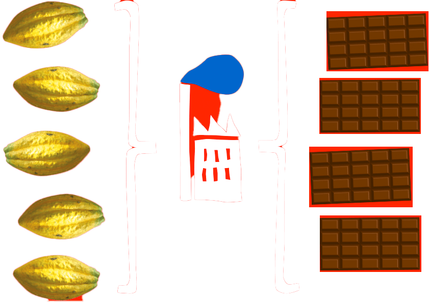
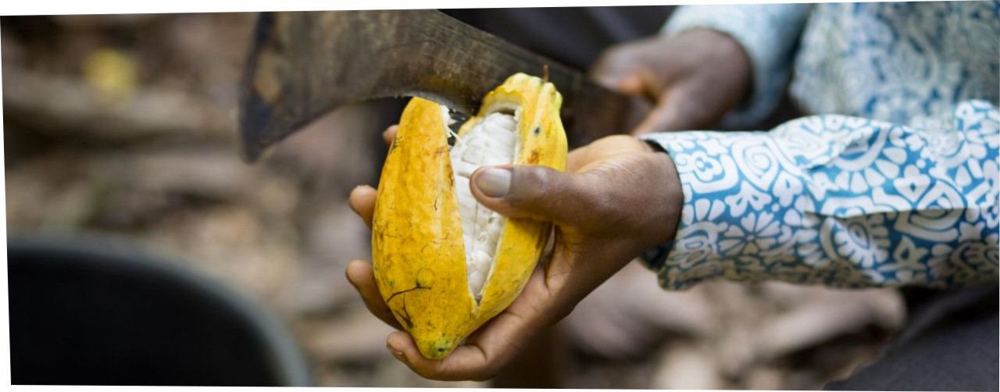

Samen maken we 100% slaafvrij de norm in chocolade
lees meer

't probleem
De chocoladeketen is ongelijk verdeeld. Miljoenen boeren aan ’t begin van de keten produceren cacao.
Miljarden consumenten aan ’t eind van de keten genieten van chocolade. En in ’t midden? Daar zit ’n
handvol chocogiganten dat 'r baat bij heeft de inkoopprijs van cacao onmenselijk laag te houden. De
cacaoboer leeft hierdoor in armoede.. met kinderarbeid en moderne slavernij tot gevolg.
't probleem
Bijna overal in de wereld zetten chocofans hun tanden in chocolade. Vrijwel iedereen houdt ervan en
iedereen heeft z’n eigen favoriete smaak. Grote chocoladebedrijven halen dan ook – naast chocolade –
hele hoge winstpercentages. Met mooie winst is helemaal niets mis, want zonder winst gaat een bedrijf
failliet. Is logisch. Minder fraai is ’t als het tot stand komt door uitbuiting aan ’t begin van de
keten, waar mensen in extreme armoede leven. Heb jij bijvoorbeeld enig idee hoeveel een cacaoboer per
dag verdient?
2,5 miljoen boerenbedrijven in Ghana en Ivoorkust produceren meer dan 60% van
alle cacao wereldwijd.
De gemiddelde cacaoboer in Ivoorkust verdient gemiddeld 78 eurocent per dag.
Daar kun je niet van leven of een gezin van onderhouden, ook niet in West-Afrika.
1,56 miljoen kinderen werken in Ghana en Ivoorkust onder illegale omstandigheden op het land,
doordat hun ouders te weinig verdienen met de oogst. Dit vinden wij niet normaal.

Nog erger,
recent
onderzoek bevestigt dat er minstens 30.000 mensen slachtoffer zijn van moderne
slavernij. Dat zijn volwassenen en kinderen die gedwongen worden om cacao te verbouwen en die daar
niet voor betaald krijgen. En waarschijnlijk zijn er nog veel meer slachtoffers, want er is nog geen
onderzoek gedaan in gebieden waar illegaal cacao geproduceerd wordt.